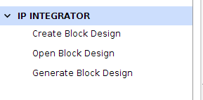
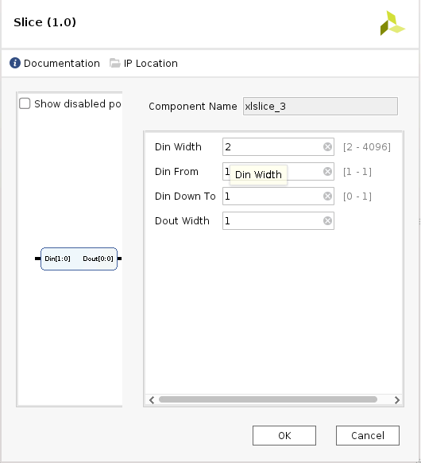

スカラー型エンジンと適応型エンジンを使用したシステム デザイン例¶
この章では、使用可能なツールとサポートされているソフトウェア ブロックを使用して、Versal™ デバイスをベースにしたシステムを構築する方法を説明します。この章では、Vivado® ツールで PL AXI GPIO を使用してエンベデッド デザインを作成する方法について説明します。また、Versal ACAP デバイス上で Arm® Cortex™-A72 コア ベースの APU 用の Linux オペレーティング システムをコンフィギュレーションしてビルドする手順についても説明します。
この章では、PetaLinux ツールの使用例についても説明します。
デザイン例: AXI GPIO の使用¶
Linux アプリケーションは、PL ベースの AXI GPIO インターフェイスを使用してボードの DIP スイッチを監視し、ボードの LED を制御します。LED アプリケーションは、VMK180/VCK190 の両方で実行できます。
ハードウェアの設定¶
最初の手順として、このデザインで PS セクションと PL セクションを設定します。これは、Vivado IP インテグレーターを使用して実行できます。まず Vivado IP カタログから必要な IP を追加し、PS サブシステムのブロックにコンポーネントを接続します。ハードウェアを設定する方法は、次のとおりです。
注記: Vivado Design Suite が既に開いている場合は、手順 3 へ進みます。
「Versal ACAP CIPS および NoC (DDR) IP コアの設定」で作成した Vivado プロジェクトを開きます。
C:/edt/edt_versal/edt_versal.xprFlow Navigator の [IP Integrator] → [Open Block Design] をクリックします。

ブロック図で右クリックし、[Add IP] をクリックします。
IP ブロックを接続して完全なシステムを作成¶
IP ブロックを接続してシステムを作成する手順は、次のとおりです。
Versal™ ACAP CIPS IP コアをダブルクリックします。
[PS-PMC] → [PL-PS Interfaces] をクリックします。
M_AXI_FPD インターフェイスをイネーブルにし、PL リセット数を 1 に設定します (前の図を参照)。
[Clock Configuration] をクリックし、[Output Clocks] タブをクリックします。
[PMC Domain Clocks] を展開します。次に、[PL Fabric Clocks] を展開します。PL0_REF_CLK クロックを次の図に示すように設定します。
[OK] をクリックして設定を完了し、ブロック図に戻ります。
IP アドレスの追加および設定¶
IP アドレスを追加および設定する手順は、次のとおりです。
ブロック図を右クリックし、[Add IP] をクリックして IP カタログから IP を追加します。
AXI GPIO を検索し、[AXI GPIO] をダブルクリックしてブロック図に追加します。
AXI GPIO IP の別のインスタンスをデザインに追加します。
[Block Design] ビューで [Run Connection Automation] をクリックします。

[Run Connection Automation] ダイアログ ボックスが開きます。
[Run Connection Automation] ダイアログ ボックスで、[All Automation] をオンにします。
これにより、AXI GPIO IP のすべてのポートの自動化がチェックされます。
axi_gpio_0の GPIO をクリックし、次に示すように [Select Board Part Interface] を [Custom] に設定します。axi_gpio_1 の GPIO も同じ設定にします。
axi_gpio_0 の S_AXI をクリックします。次の図に示すように設定します。
axi_gpio_1 の S_AXI も同じ設定にします。これにより、次の接続が設定されます。
SmartConnect を CIPS と AXI GPIO IP 間のブリッジ IP として使用して AXI_GPIO の S_AXI と CIPS の M_AXI_FPD を接続します。
プロセッサ システム リセット IP をイネーブルにします。
pl0_ref_clkをプロセッサ システム リセット、AXI GPIO、および SmartConnect IP クロックに接続します。SmartConnect および AXI GPIO のリセットをプロセッサ システム リセット IP の
peripheral_aresetnに接続します。
[OK] をクリックします。
[Block Design] ビューで [Run Connection Automation] をクリックし、[All Automation] チェック ボックスをオンにします。
ext_reset_in をクリックして、次のように設定します。

これにより、プロセッサ システム リセット IP の
ext_reset_inが CIPS の pl_resetn に接続されます。OK をクリックします。
プロセッサ システム リセット IP の
peripheral_aresetnから SmartConnect IP のaresetnへの接続を解除します。SmartConnect IP の
aresetnをプロセッサ システム リセット IP のinterconnect_aresetnに接続します。
axi_gpio_0 IP をダブルクリックして開きます。
次の図のように [IP Configuration] タブを設定します。

axi_gpio_1 も同じ設定にします。
Slice IP のインスタンスをさらに 4 つ追加します。
AXI GPIO IP の外部ピンを削除し、インターフェイスを展開します。
axi_gpio_0 の出力ピン gpio_io_0 をスライス 0 およびスライス 1 に接続します。
同様に、axi_gpio_1 の出力ピン gpio_io_0 をスライス 2 およびスライス 3 に接続します。
Slice IP の出力を外部接続 (Make External) にします。
次のように各 Slice IP を設定します。



ブロック デザイン全体が次のようになります。
デザインの検証および出力の生成¶
デザインを検証し、出力ファイルを生成するには、次の手順を実行します。
[Block Design] ビューに戻り、ブロック デザインを保存します (Ctrl + S キーを押す)。
[Diagram] ビューの空白部分を右クリックして、[Validate Design] をクリックします。または、F6 キーを押します。
次のメッセージを示すダイアログ ボックスが開きます。

[OK] をクリックしてメッセージを閉じます。
[Sources] ウィンドウをクリックします。
制約を展開します。
[constrs_1] を右クリックし、[Add Sources] をクリックします。 [Add Sources] ウィンドウが開きます。
[Add or Create Constraints] オプションを選択し、[Next] をクリックします。
追加する .xdc ファイルを選択します。
注記: 制約ファイルは
pl_axigpio/ constrsフォルダーにパッケージの一部として含まれます。[Finish] をクリックします。
[Hierarchy] タブをクリックします。
[Sources] ウィンドウの [Design Sources] の下の [edt_versal_wrapper] を展開します。
edt_versal_i : edt_versal (
edt_versal.bd) という最上位ブロックを右クリックし、[Generate Output Products] をクリックします。
[Generate] をクリックします。
[Generate Output Products] の処理が完了したら、[OK] をクリックします。
[Sources] ウィンドウで [IP Sources] ビューをクリックします。次の図に示すように、生成した出力ファイルが表示されます。
デバイス イメージの合成、インプリメント、生成¶
デザインのデバイス イメージを生成するには、次の手順を実行します。
Flow Navigator の [Program and Debug] をクリックし、[Generate Device Image] をクリックし、[OK] をクリックします。
[No Implementation Results Available] メニューが表示されます。[Yes] をクリックします。
[Launch Run] メニューが表示されます。[OK] をクリックします。
デバイス イメージの生成が完了すると、[Device Image Generation Completed] ダイアログ ボックスが開きます。
[Cancel] をクリックしてウィンドウを閉じます。
デバイス イメージを生成したら、ハードウェアをエクスポートします。
注記: 次の手順はオプションなので、省略して「ハードウェアのエクスポート」 セクションに進むこともできます。これらの手順を実行すると、デバイス イメージを生成する前に合成およびインプリメンテーションを実行するので、デバイス イメージ生成の詳細なフローがわかるようになります。デバイス イメージの生成フローを理解する必要がある場合は、次の手順を実行します。
Flow Navigator で [Synthesis] をクリックし、[Run Synthesis] をクリックします。

合成の開始前にプロジェクトを保存するようメッセージが表示された場合は、[Save] をクリックします。
合成の実行中、ウィンドウの右上にステータス バーが表示されます。このステータス バーは、デザイン プロセスをとおして、さまざまな理由により表示されます。ステータス バーは、プロセスがバックグラウンドで実行されていることを示します。合成が完了すると、[Synthesis Completed] ダイアログ ボックスが開きます。
[Run Implementation] をクリックして [OK] をクリックします。
インプリメンテーションが完了すると、[Implementation Completed] ダイアログ ボックスが開きます。
[Generate Device Image] をクリックして [OK] をクリックします。
デバイス イメージの生成が完了すると、[Device Image Generation Completed] ダイアログ ボックスが開きます。
[Cancel] をクリックしてウィンドウを閉じます。
デバイス イメージを生成したら、ハードウェアをエクスポートします。
ハードウェアのエクスポート¶
Vivado のメイン メニューから [File] → [Export] → [Export Hardware] をクリックします。[Export Hardware] ダイアログ ボックスが開きます。
[Include bitstream] を選択し、[Next] をクリックします。
エクスポートしたファイルの名前を入力し (またはデフォルトを使用し)、ディレクトリを選択します。[Next] をクリックします。
ハードウェア モジュールが既にエクスポートされている場合は、警告メッセージが表示されます。既存の XSA ファイルを上書きするかどうか尋ねるメッセージが表示されたら、[Yes] をクリックします。
[Finish] をクリックします。
サンプル プロジェクト: RPU を使用した FreeRTOS GPIO アプリケーション プロジェクト¶
このセクションでは、Versal デバイス上で Arm® Cortex™R5F コア ベースの RPU 用の FreeRTOS アプリケーションをコンフィギュレーションしてビルドする手順について説明します。
次の手順は、Arm Cortex-R5F から FreeRTOS アプリケーションを作成する手順を示しています:
Vitis™ IDE を起動し、
c:/edt/freertosなどの新しいワークスペースを作成します。[File] → [New] → [Application Project] をクリックします。[Create a New Application Project] ページが開きます。Vitis™ IDE を初めて起動した場合は、次の図に示す Welcome 画面で [Create Application Project] を選択できます。

注記: オプションで、[Skip welcome page next time] チェック ボックスをオンにすると、毎回 Welcome ページを表示しないようにすることもできます。
Vitis IDE には、ターゲット プラットフォーム、システム プロジェクト、ドメイン、テンプレートの 4 つのコンポーネントがあります。 Vitis IDE で新しいアプリケーション プロジェクトを作成するには、次の手順に従います。
ターゲット プラットフォームには、ベース ハードウェア デザインと、宣言されたインターフェイスにアクセラレータを接続するのに使用されたメタデータが含まれます。プラットフォームを選択するか、Vivado Design Suite からエクスポートした XSA からプラットフォーム プロジェクトを作成します。
アプリケーション プロジェクトをシステム プロジェクトに配置し、プロセッサに関連付けます。
ドメインでは、ターゲット プラットフォームでホスト プログラムを実行するのに使用されるプロセッサおよびオペレーティング システムを定義します。
アプリケーションのテンプレートを選択して、開発を迅速に開始します。ウィザードの各ページで次の表の情報に基づいて設定を選択します。
表 9: ウィザード情報
| ウィザード ページ | システム プロパティ | 設定または使用するコマンド |
|---|---|---|
| Platform | Create a new platform from hardware (XSA) | [Browse] をクリックして XSA ファイルを追加 |
| Platform Name | vck190_platform | |
| Application Project Detail | Application project name | freertos_gpio_test |
| Select a system project | +Create New | |
| System project name | freertos_gpio_test_system | |
| Processor | psv_cortexr5_0 | |
| Dom | Select a domain | +Create New |
| Name | デフォルト名入力済み | |
| Display Name | デフォルト名入力済み | |
| Operating System | freertos10_xilinx | |
| Processor | psv_cortexr5_0 | |
| Templates | Available | Freertos Hello |
| Templates | world |
Vitis ソフトウェア プラットフォームは、上記の手順を実行した後、Explorer ビューの下に、プラットフォーム プロジェクト (vck190_platform) と freertos_gpio_test というアプリケーション プロジェクトを含むシステム プロジェクト (freertos_gpio_test_system) のボード サポート パッケージを作成します。
src/の下のfreertos_hello_world.cファイルを右クリックし、freertos_hello_world.cファイル名をfreertos_gpio_test.cに変更します。FreeRTOS プロジェクト パス (<design-package>/vck190/freertos/) からfreertos_gpio_test.cファイルをsrc/の下のfreertos_gpio_test.cにコピーします。freertos_gpio_test_system を右クリックし、[Build Project] をクリックします。または、 をクリックします。
注記: [Project Explorer] ビューが表示されない場合は、左側のパネルの復元アイコンをクリックし、この手順を実行します。
Linux イメージをビルドし、FreeRTOS ELF をイメージに組み込む方法については、「サンプル プロジェクト: PetaLinux を使用した Linux イメージの作成」を参照してください。
サンプル プロジェクト: PetaLinux を使用した Linux イメージの作成¶
このセクションでは、Versal デバイス上で Arm Cortex-A72 コア ベースの APU 用の Linux オペレーティング システムをコンフィギュレーションしてビルドする手順について説明します。PetaLinux ツールをボード固有の BSP と使用すると、Linux イメージをコンフィギュレーションおよびビルドできます。
このサンプル プロジェクトには、Linux ホスト マシンが必要です。PetaLinux ツールの依存関係とインストール手順については、『etaLinux ツールの資料: リファレンス ガイド』 (UG1144) を参照してください。
重要: この例では、VCK190 PetaLinux BSP を使用して PetaLinux プロジェクトを作成します。PetaLinux (VCK190/VMK180) に該当する BSP がダウンロードされていることを確認します。
VCK190 ボードを使用している場合は、https://www.xilinx.com/member/vck190_headstart.html から
xilinx-vck190-es1-v2020.2-final.bspファイルをダウンロードします。VMK180 ボードを使用している場合は、https://japan.xilinx.com/member/vmk180_headstart.html から VMK180 PetaLinux 2020.2 BSP (xilinx- vmk180-v2020.2-final.bsp) をダウンロードします。
各ボードの PetaLinux BSP を現在のディレクトリにコピーします。
PetaLinux 環境を設定します。
$ source <petalinux-tools-path>/settings.csh
次のコマンドを使用して PetaLinux プロジェクトを作成します。
$ petalinux-create -t project -s xilinx-vck190-vxxyy.z-final.bsp -n led_example
注記： VMK180 ボードの場合は、コマンドの
-sオプションの後にxilinx-vmk180-vxxyy.z-final.bspを使用します。次のコマンドを使用して、PetaLinux プロジェクト ディレクトリに移動します。
$cd led_example
ハードウェア プラットフォーム プロジェクトの XSA を Linux ホスト マシンにコピーします。
注記: VMK180 ボードの場合は、「デザイン例: AXI GPIO の使用」で生成した XSA ファイルを使用します。
次のコマンドを実行して BSP を再設定します。
$ petalinux-config --get-hw-description=<path till the directory containing the respective xsa file>
[PetaLinux Configuration] ウィンドウが開きます。この例では、このウィンドウで何も変更する必要はありません。
をクリック して上記の設定を保存し、 でコンフィギュレーション ウィザードを終了します。 次のコマンドを使用して、PetaLinux プロジェクト内に gpiotest という名前の Linux アプリケーションを作成します。
$petalinux-create -t apps --template install --name gpiotest --enable
次のコマンドを使用して、
<design-package>/<vck190 or vmk180>/linux/bootimagesからプロジェクトにアプリケーション ファイルをコピーします。$cp <design-package>/vck190/linux/design_files/gpiotest_app/gpiotest/files/* <plnxproj-root>/project-spec/meta-user/recipes-apps/gpiotest/files/ $cp <design-package>/vck190/linux/design_files/gpiotest_app/gpiotest.bb <plnx-proj-root>/project-spec/meta-user/recipes-apps/gpiotest/gpiotest.bb $cp <design-package>/vck190/linux/design_files/device_tree/system-user.dtsi <plnx-proj-root>/project-spec/meta-user/recipes-bsp/device-tree/files/system-user.dtsi
カーネル コンフィギュレーション内で GPIO サポートをイネーブルにします。
$petalinux-config -c kernel
注記: このコマンドは、PetaLinux プロジェクトのカーネル コンフィギュレーション ウィザードを開きます。
[Device drivers] → [GPIO Support] をクリックし、
キーを押します。Enter キーを押し、 キーを押して、Debug GPIO calls と /sys/class/gpio/...(sysfs interface)のエントリをイネーブルにします。Memory mapped GPIO drivers まで移動し、
キーを押して、Xilinx GPIO support および Xilinx Zynq GPIO support をイネーブルにします。 をクリックして上記の設定を保存し、 オプションでコンフィギュレーション ウィザードを終了します。 次のコマンドを使用して、Linux イメージをビルドします。
$ petalinux-build
BIF ファイルを使用した FreeRTOS と APU イメージの結合¶
Vitis IDE ワークスペースで XSCT コンソールを開きます。
PetaLinux プロジェクトの
images/linuxディレクトリに移動します。$ cd <petalinux-project>/images/linux/
<design-package>/vck190/freertos/freertos_gpio_test.elfからfreertos_gpio_test.elfをimages/linuxディレクトリにコピーします。$ cp <design-package>/freertos/freertos_gpio_test.elf.
<design-package>/からbootgen.bifファイルをimages/linuxディレクトリにコピーします。$ cp <design-package>/bootgen.bif.
次のコマンドを実行して
BOOT.BINを作成します。$ bootgen -image bootgen.bif -arch versal -o BOOT.BIN -w
これで、
<petalinux-project>/images/linux/ディレクトリにBOOT.BINイメージ ファイルが作成されます。
注記: SD ブート モードを使用してイメージを実行するには、「SD ブート モードのブート シーケンス」を参照してください。
© Copyright 2020-2021 Xilinx, Inc.
Apache ライセンス、バージョン 2.0 (以下「ライセンス」) に基づいてライセンス付与されています。本ライセンスに準拠しないと、このファイルを使用することはできません。ライセンスのコピーは、http://www.apache.org/licenses/LICENSE-2.0 から入手できます。
適切な法律で要求されるか、書面で同意された場合を除き、本ライセンスに基づいて配布されるソフトウェアは、明示的または黙示的を問わず、いかなる種類の保証または条件もなく、「現状のまま」配布されます。ライセンスに基づく権限と制限を管理する特定の言語については、ライセンスを参照してください。